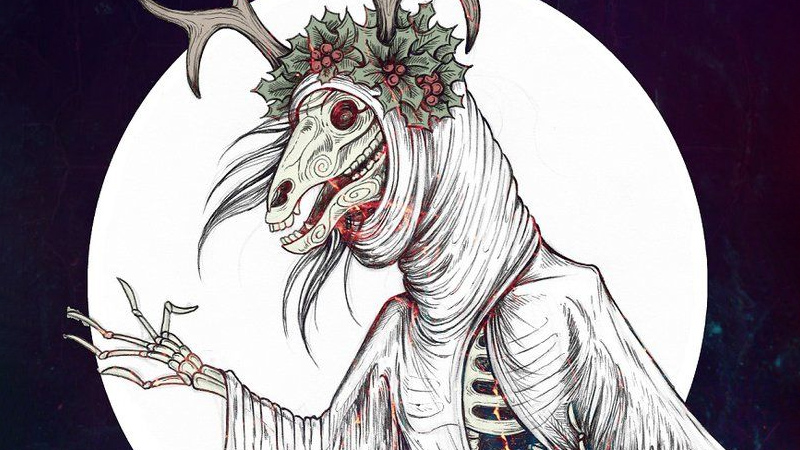
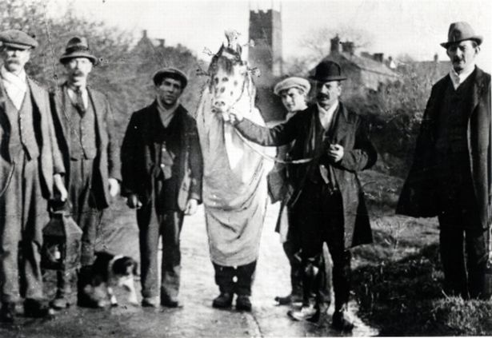
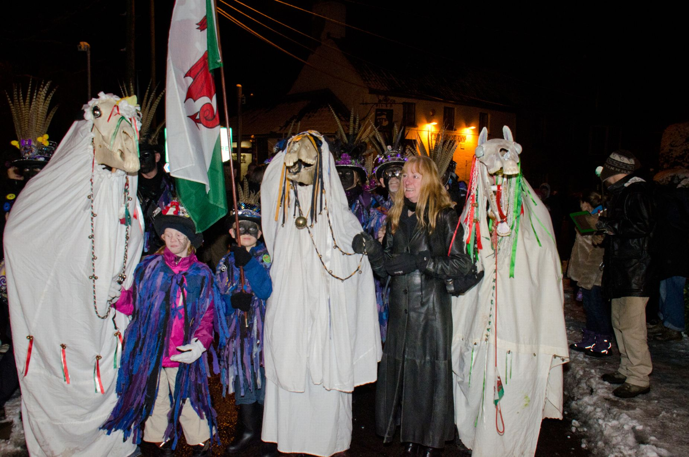

The Mari Lwyd or Maryi Lwyd is a wassailing folk custom found in Wales.
The word "Mari Lwyd" translates as the Grey Mare and is a part of a pagan tradition celebrated in Wales around December time - though some regions wait until January. The Mari Lwyd itself consists of a horse's skull that is decorated with ribbons and affixed to a pole; to the back of the skull is attached a white sheet, which drapes down to conceal both the pole and the individual carrying this device.

The Mari Lwyd tradition dates back thousands of years and it is a symbol of power in Britain. Some scholars place Mari Lwyd's importance in a Christian context, however, arguing the translation is a variation of "Blessed Mary" or "Holy Mary," a reference to the Virgin Mary. And legend says the gray mare in question vacated its barn to make room for Mary before giving birth, leaving it to search for new shelter eternally. Iorwerth Peate, a Welsh folklorist, argued in 1943 that the Mari Lwyd ritual was associated with the Virgin Mary's flight to Egypt, celebrated as the Feast of Donkeys. The feast takes place in January, which could explain Mari Lwyd's connection to the holiday season.
The Welsh tradition of the the Mari Lwyd is a custom performed during winter celebrations around the dates of Christmas and New Year. Although performed over the Christmas period, the Mari Lwyd is thought to be a pre-Christian tradition believed to bring good luck. She is dressed with festive lights and decorations, and is usually accompanied by an ostler, and in some regions like Ystradgynlais in the Swansea Valleys, other folk characters like a jester and a Lady. This brings the tradition closer together with Mummers' Plays, a tradition of performances by the working classes in the 18th century. When the groups get to a house, they sing Welsh language songs or wassails, or more traditionally indulge in a ritual called pwnco: an exchange of rude rhymes with the person who lives there. If the Mari and her gang get entry, the household is said to have good luck for the year. The Mari is well-known to be mischievous – trying to steal things and chase people she likes – as she goes about her bidding.
